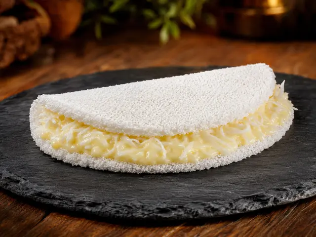
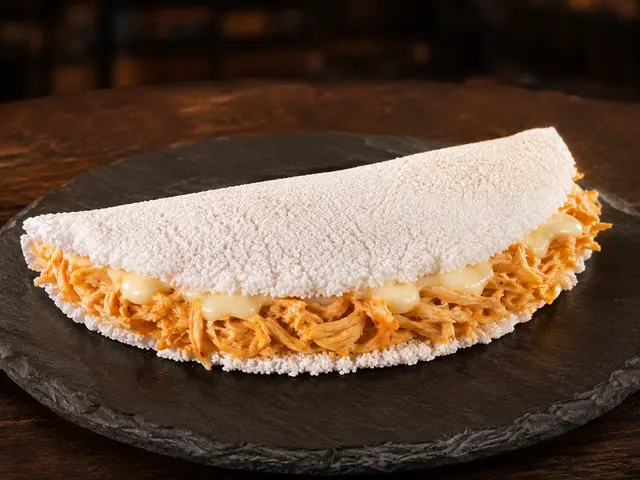
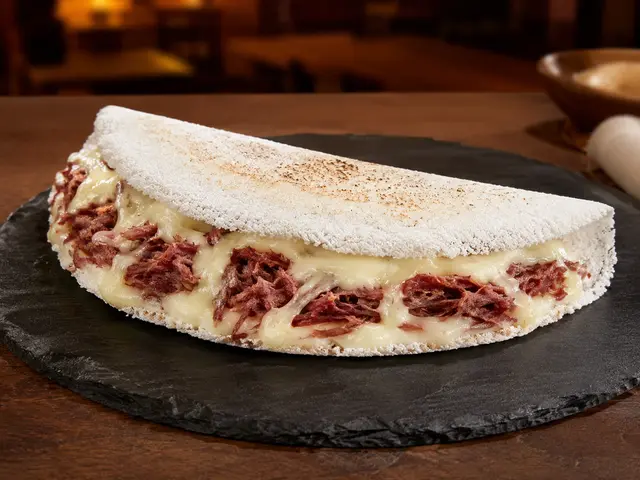
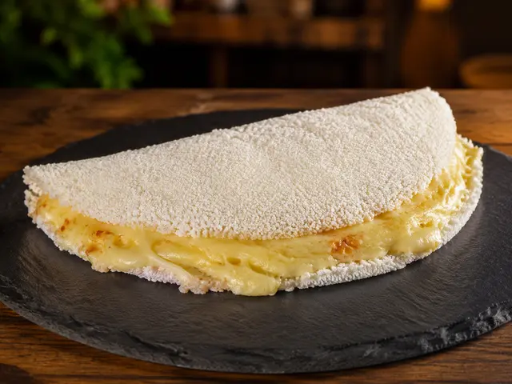
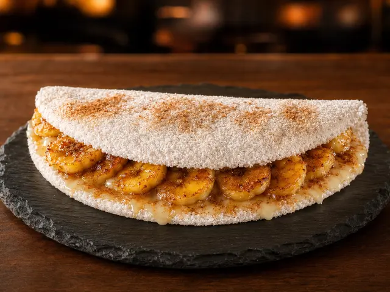

Top 3 mais vendidas
Pódio de sabores do mês.

Beijinho1.856 unidadesMelhor dia: Sexta-feira

Frango com Catupiry1.246 unidadesMelhor dia: Terça-feira

Carne Seca com Queijo1.032 unidadesMelhor dia: Quarta-feira
GESTÃO MENSAL
Visão executiva de vendas, custos, rotas e resultado.
Resultado consolidado do período selecionado.
Base vendida, percentual aplicado e valor descontado.
| Forma | Vendas | Taxa | Desconto |
|---|---|---|---|
| Crédito | R$ 7.704,00 | 5,00% | R$ 385,20 |
| Débito | R$ 6.360,00 | 2,00% | R$ 127,20 |
| VR | R$ 3.577,82 | 5,59% | R$ 200,00 |
Pódio de sabores do mês.



Quantidade e faturamento por período.
Comparativo dos últimos três meses e tendência atual.
| Produto | Mai | Jun | Jul | Tendência |
|---|---|---|---|---|
 Dois Queijos | 86 | 72 | 95 | Cresceu ↑ |
 Banana com Canela | 74 | 68 | 61 | Caiu ↓ |
| Coco | 0 | 0 | 0 | Sem vendas — |
Faturamento, participação, volume e campeã de vendas.